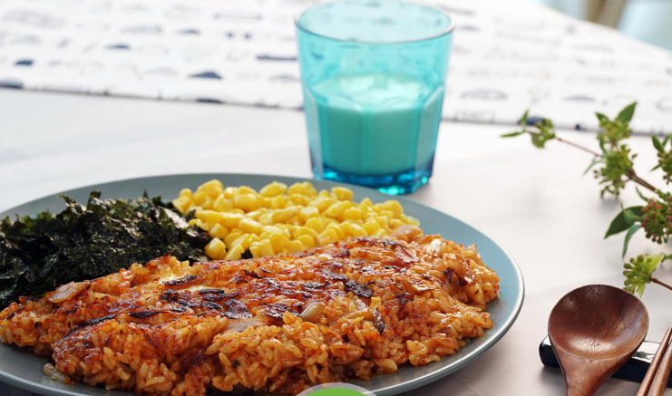

🍽️ 재료
필수 재료
양념 재료
곁들임 재료
| 다진 김치 |
1+1/2종이컵 |
| 피자치즈 |
1/2 종이컵 |
| 대파 |
1대 |
| 밥 |
2공기 |
| 간장 |
1숟가락 |
| 황설탕 |
1숟가락 |
| 고춧가루 |
1숟가락 |
🧑🍳 동영상
📝 레시피
- 대파는 송송 썬 후 달군 팬에 식용유를 넉넉히 두르고 대파를 넣어 볶는다.
- 파향이 나오면 다진 김치를 넣어 볶는다.
- 팬 가장자리에 간장과 설탕을 넣어 볶는다.
- 마지막으로 고춧가루를 넣고 볶아 김치밥 베이스를 만든다.
- 볼에 밥과 김치밥 베이스를 넣고 잘 비벼준다.
- 기름을 두른 팬에 비벼진 밥을 눌어 붙도록 넓게 펴준다.
- 피자치즈를 한쪽면에 올리고 뚜껑을 닫아 30초 정도 익힌다.
- 김치밥을 반으로 접어 그릇에 담은 뒤 김가루와 옥수수통조림을 곁들여 완성한다.